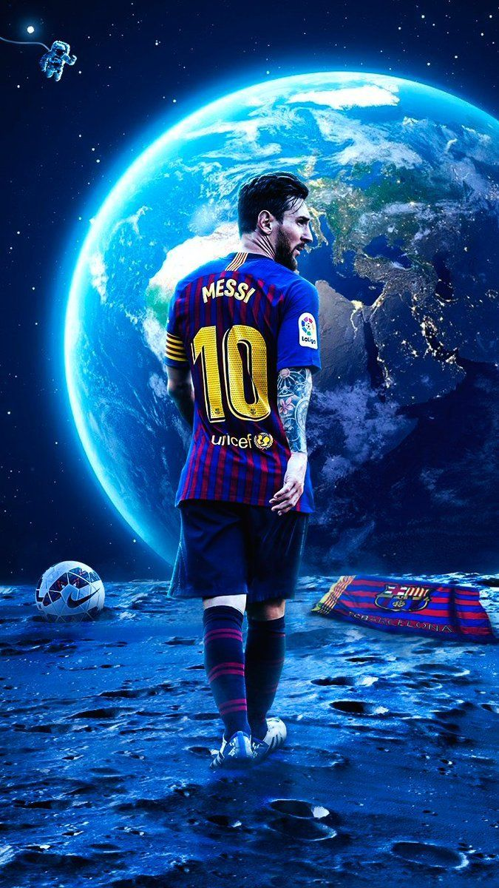
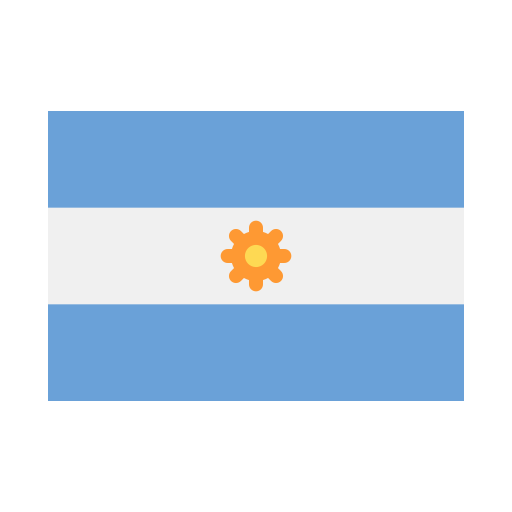

Lionel Messi

Argentino (35 anos)
Lionel Andrés Messi Cuccittini(Rosário, 24 de junho de 1987) é um futebolista argentino que atua como atacante. Atualmente joga pelo Paris Saint-Germain e pela Seleção Argentina, onde, atuando como capitão, venceu a Copa do Mundo do Catar de 2022. Ele possui um recorde de sete premiações da Bolas de Ouro pela France Football, seis pela FIFA[9], um recorde de seis Chuteiras de Ouro e, em 2020, foi escalado no Dream Team da Bola de Ouro.
CLUBS:


 7 Bolas de Ouro
7 Bolas de Ouro